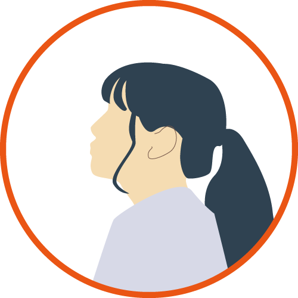

About

愛知工業大学 情報科学部 情報科学家 メディア情報専攻 自然言語処理学研究室所属の肥田京佳です。
エージェントと自然なコミュニケーションを実現するための研究をしたいと考えています。また、
3DCGや映像制作、ロゴデザインやイラストなど、さまざまなことに挑戦しています。
何事も意外とやってみれば「楽しい」と思えることが私の長所です!
Skill
-
動画編集
After Effects / Premiere Pro
サークルで映像制作を行った経験があり、チームでの制作に携わってきました。また、イラスト、図形、3DCGを用いた動画制作が可能です。
-
3DCG
Blender / Maya / Unity
物や背景を制作した経験があります。アニメーションをつけることも可能です。また、ゲームエフェクト等の制作に挑戦しています。
-
イラスト
Photosho
人や動物を描くのが得意です。板タブレットを用いて制作を行なっています。立体感を感じるイラストになるよう心がけています。
-
プログラミング
C++ / C#
C++によるOpenCV,OpenGLを用いた動画像処理やC#によるゲーム制作の経験があります。